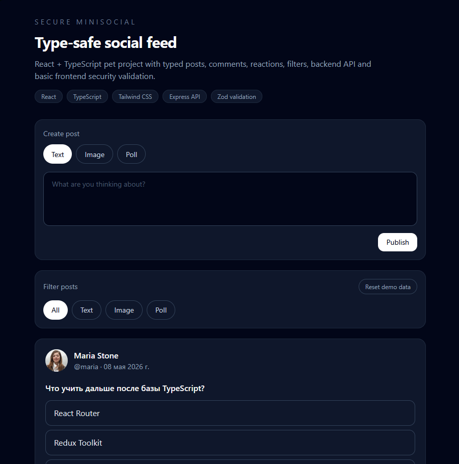
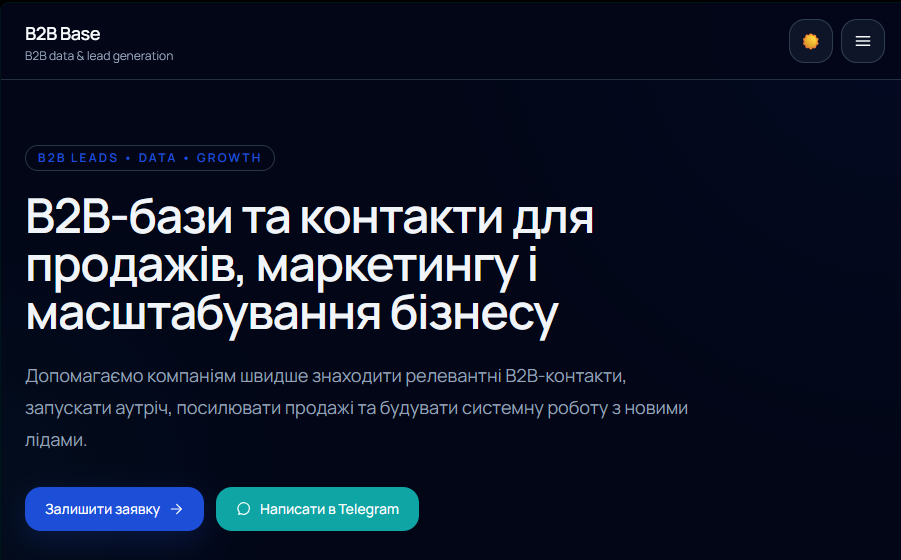
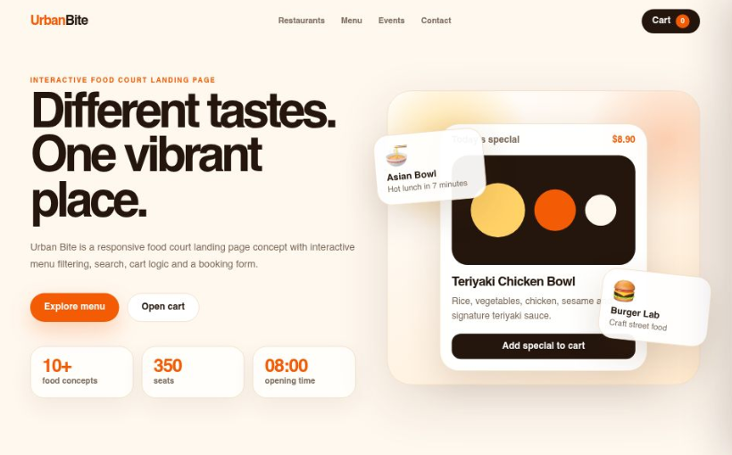
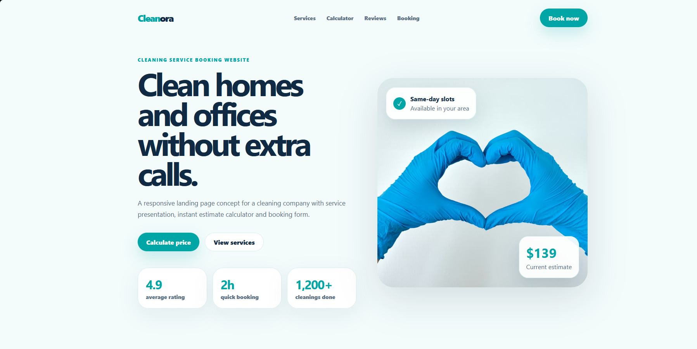

Development profile
I work with React, TypeScript, JavaScript, Node.js, Express, Prisma and PostgreSQL basics. My strongest current side is building practical interfaces and connecting them with backend concepts, data models and user flows.
I build practical frontend and fullstack projects with React, TypeScript, Node.js, Express, Prisma and PostgreSQL. My focus is authentication flows, REST APIs, database models, responsive interfaces and fast growth through real project work.
I am strengthening the exact fundamentals needed for React/Node.js roles: API design, authentication, database relations, clean project structure, deployment and readable code.
I work with React, TypeScript, JavaScript, Node.js, Express, Prisma and PostgreSQL basics. My strongest current side is building practical interfaces and connecting them with backend concepts, data models and user flows.
B2B Base gave me useful commercial context: product structure, client needs, sales data, service presentation and the difference between a code exercise and a product someone can actually understand.
The goal is not a long list of buzzwords. The goal is a clear signal: frontend, backend, database, tooling and growth direction.
The first projects show fullstack direction and application logic. Landing pages stay here as proof of UI, forms and deployment practice.

A fullstack/social practice project focused on secure user flows, client-server architecture and backend fundamentals.

My first commercial project focused on custom B2B company databases, lead lists, market research and sales workflows.

Interactive food court interface with product browsing, search, cart logic and booking form validation.

Responsive booking website for a cleaning service with service cards, calculator and contact-oriented user flow.
This is the next layer that turns project practice into stronger fullstack engineering.
JWT, access and refresh tokens, cookies, middleware, logout flow and protected routes.
PostgreSQL joins, relations, indexes, transactions, Prisma migrations and seed data.
Docker, Docker Compose, environment variables and one-command local project startup.
Next.js App Router, server components, server actions, RBAC and real-time features.